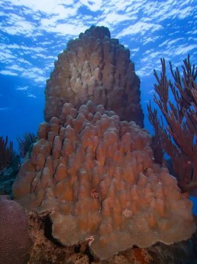
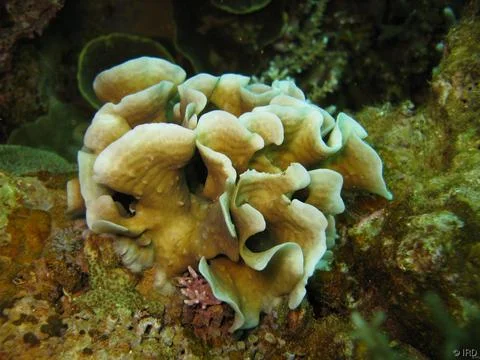
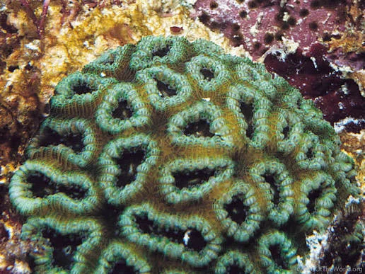
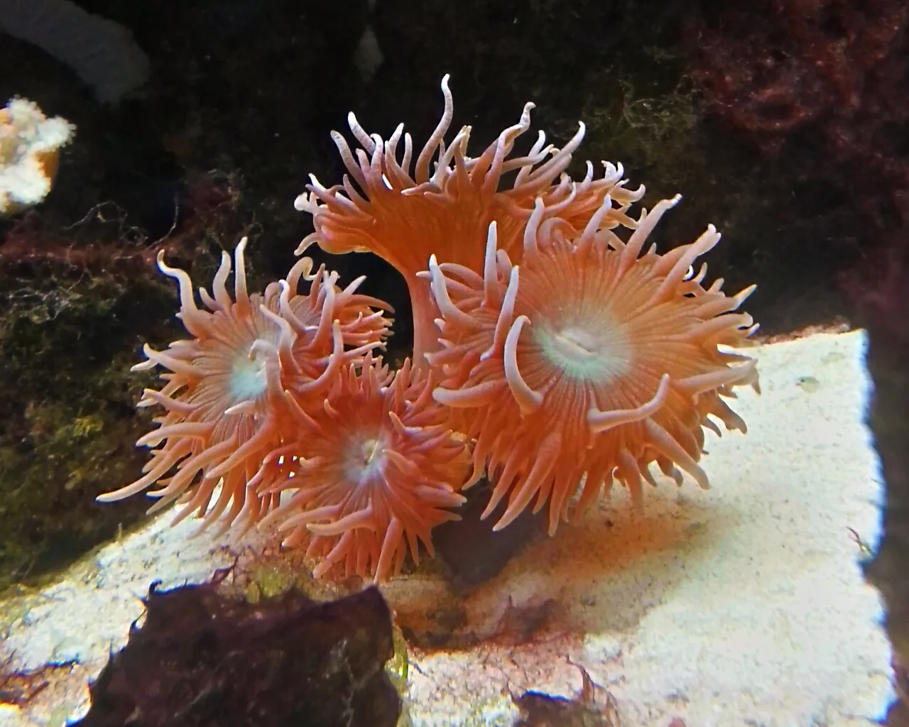

Tortuga verde
Nombre científico: Chelonia mydas. Se alimenta principalmente de pastos marinos y algas cuando es adulta. Ayuda a mantener saludables las praderas submarinas.

Conoce la diversidad de animales y organismos que habitan los océanos y descubre por qué es importante protegerlos.
Las tortugas marinas son reptiles que pasan la mayor parte de su vida en el océano. Contribuyen al equilibrio de los ecosistemas y algunas ayudan a mantener saludables los pastos marinos y los arrecifes.
Nombre científico: Chelonia mydas. Se alimenta principalmente de pastos marinos y algas cuando es adulta. Ayuda a mantener saludables las praderas submarinas.
Nombre científico: Eretmochelys imbricata. Tiene un pico estrecho que le permite alimentarse entre las grietas de los arrecifes. Consume esponjas y otros organismos marinos.

Nombre científico: Caretta caretta. Posee una cabeza grande y mandíbulas fuertes. Se alimenta de crustáceos, moluscos y otros animales que encuentra en el fondo marino.

Nombre científico: Dermochelys coriacea. Es la tortuga marina más grande que existe. Su caparazón tiene una estructura flexible y se alimenta principalmente de medusas.

Nombre científico: Lepidochelys kempii. Es una tortuga marina pequeña que se alimenta de cangrejos y otros invertebrados. Sus principales zonas de anidación se encuentran en el golfo de México.

Nombre científico: Lepidochelys olivacea. Es conocida por sus anidaciones masivas en algunas playas. Su alimentación incluye crustáceos, peces y otros organismos marinos.

Nombre científico: Natator depressus. Habita principalmente aguas de Australia y sus alrededores. Tiene un caparazón relativamente plano y se alimenta de organismos marinos de cuerpo blando, crustáceos y otros animales pequeños.

Los delfines son mamíferos marinos que respiran aire, cuidan a sus crías y utilizan sonidos para comunicarse. Muchas especies viven en grupos y emplean la ecolocalización para orientarse y encontrar alimento.
Nombre científico: Tursiops truncatus. Es uno de los delfines más conocidos. Habita mares tropicales y templados, y se alimenta de peces y calamares.

Nombre científico: Delphinus delphis. Tiene un patrón de colores que puede formar una figura parecida a un reloj de arena en sus costados. Suele desplazarse en grupos numerosos.

Nombre científico: Delphinus capensis. Presenta un hocico alargado y vive en distintas regiones oceánicas. Se alimenta principalmente de peces y calamares.

Nombre científico: Stenella longirostris. Es conocido por sus saltos y giros fuera del agua. Habita principalmente aguas tropicales y suele formar grupos grandes.

Nombre científico: Stenella frontalis. Los adultos desarrollan manchas en el cuerpo. Vive en aguas cálidas del océano Atlántico.

Nombre científico: Stenella attenuata. Habita aguas tropicales y subtropicales de diferentes océanos. Se alimenta de peces y calamares.

Nombre científico: Stenella coeruleoalba. Presenta líneas oscuras en los costados que se extienden desde la zona de los ojos. Habita principalmente aguas templadas y cálidas.

Nombre científico: Grampus griseus. Su cuerpo puede desarrollar numerosas cicatrices claras con el paso del tiempo. Se alimenta principalmente de calamares.

Nombre científico: Lagenodelphis hosei. Tiene un cuerpo robusto y marcas oscuras en los costados. Habita aguas tropicales profundas y suele desplazarse en grupos.

Nombre científico: Steno bredanensis. Se distingue por su cabeza cónica y los surcos de sus dientes. Habita aguas tropicales y subtropicales.

Nombre científico: Cephalorhynchus hectori. Es uno de los delfines más pequeños del mundo. Habita aguas costeras de Nueva Zelanda.

Nombre científico: Cephalorhynchus eutropia. Vive en aguas costeras de Chile y suele encontrarse cerca de estuarios y canales.

Nombre científico: Cephalorhynchus commersonii. Su cuerpo presenta manchas blancas y negras muy características. Habita aguas frías del hemisferio sur.

Nombre científico: Sousa chinensis. Habita zonas costeras del océano Índico y del Pacífico occidental. Algunas poblaciones presentan una tonalidad rosada en la piel.

Nombre científico: Sousa teuszii. Vive en aguas costeras de África occidental. Depende de hábitats cercanos a la costa y los estuarios.

Nombre científico: Inia geoffrensis. También es conocido como boto. Habita ríos y zonas inundables de Sudamérica, donde se orienta en aguas que pueden ser turbias.

Nombre científico: Platanista gangetica. Vive en sistemas fluviales del sur de Asia. Utiliza la ecolocalización para localizar a sus presas en aguas con poca visibilidad.

Nombre científico: Platanista minor. Habita el sistema del río Indo. Su supervivencia depende de la conservación del caudal y de la calidad del agua.

Nombre científico: Sousa sahulensis. Habita aguas costeras del norte de Australia y regiones cercanas. Busca alimento en ambientes poco profundos.

Nombre científico: Peponocephala electra. También se conoce como calderón pequeño de cabeza melón. Es un cetáceo de cuerpo oscuro que suele desplazarse en grupos numerosos.

Nombre científico: Orcinus orca. Aunque se conoce como ballena asesina, pertenece a la familia de los delfines y es su miembro de mayor tamaño. Se alimenta de peces y, según la población, de otros mamíferos marinos.

Los corales son animales que pueden vivir individualmente o formar colonias. Muchos construyen estructuras de carbonato de calcio que, con el tiempo, forman arrecifes. Estos ecosistemas proporcionan refugio y alimento a una enorme variedad de organismos marinos.
Nombre científico: Acropora palmata. Forma ramas anchas que recuerdan los cuernos de un alce. Es importante para la estructura de los arrecifes del Caribe.

Nombre científico: Acropora cervicornis. Sus ramas delgadas ofrecen refugio a peces pequeños y otros animales. Puede formar zonas densas de coral.

Nombre científico: Orbicella faveolata. Forma colonias grandes y resistentes que contribuyen a la estructura de los arrecifes caribeños.

Nombre científico: Orbicella annularis. Desarrolla colonias de formas redondeadas o lobuladas. Proporciona una superficie sólida dentro del arrecife.

Nombre científico: Montastraea cavernosa. Puede formar colonias grandes y presentar pólipos relativamente prominentes. Habita distintos ambientes de arrecife.

Nombre científico: Diploria labyrinthiformis. Su superficie presenta surcos que recuerdan los pliegues de un cerebro. Es un coral constructor de arrecifes.

Nombre científico: Colpophyllia natans. Forma colonias grandes con surcos sinuosos. Sirve como refugio para diversos organismos del arrecife.

Nombre científico: Pseudodiploria strigosa. Sus colonias presentan surcos ondulados y pueden cubrir superficies extensas del fondo marino.

Nombre científico: Orbicella faveolata. Desarrolla colonias masivas que contribuyen a la formación de arrecifes. Es sensible al deterioro de las condiciones ambientales.

Nombre científico: Agaricia agaricites. Sus láminas y formas onduladas recuerdan las hojas de una lechuga. Puede crecer en diferentes zonas de los arrecifes tropicales.

Nombre científico: Millepora alcicornis. Aunque parece un coral, pertenece a un grupo diferente de animales marinos. Forma estructuras ramificadas y posee células urticantes.

Nombre científico: Pocillopora damicornis. Forma colonias ramificadas que sirven de refugio a pequeños peces e invertebrados en arrecifes tropicales del Indo-Pacífico.

Nombre científico: Pocillopora verrucosa. Sus ramas tienen pequeñas protuberancias que le dan una apariencia similar a una coliflor.

Nombre científico: Porites porites. Forma ramas alargadas parecidas a dedos. Puede contribuir a la estructura de los arrecifes de aguas tropicales.

Nombre científico: Trachyphyllia geoffroyi. Es un coral de pólipo grande que suele vivir sobre fondos arenosos o entre otros organismos del arrecife.

Nombre científico: Catalaphyllia jardinei. Tiene tentáculos largos y ondulados. Vive en zonas del Indo-Pacífico y puede encontrarse en fondos arenosos cercanos a arrecifes.

Nombre científico: Fungia fungites. Puede desarrollar una forma aplanada semejante a un disco. Muchos corales de este grupo viven separados del sustrato cuando son adultos.

Nombre científico: Euphyllia ancora. Sus tentáculos tienen extremos con forma de martillo. Proporciona refugio a organismos que habitan los arrecifes tropicales.

Nombre científico: Euphyllia glabrescens. Posee tentáculos largos con extremos redondeados. Se encuentra en ambientes de arrecife del Indo-Pacífico.

Nombre científico: Seriatopora hystrix. Sus ramas finas forman estructuras densas parecidas a un nido. Sirve de refugio a pequeños animales marinos.

Nombre científico: Pavona cactus. Sus estructuras aplanadas pueden crecer en forma de láminas y pliegues sobre las superficies arrecifales.

Nombre científico: Favia fragum. Es un coral pétreo que forma pequeñas colonias redondeadas con estructuras que recuerdan un cerebro.

Nombre científico: Tubastraea coccinea. Presenta pólipos de colores intensos y no depende de la luz solar de la misma manera que muchos corales constructores de arrecifes.

Nombre científico: Duncanopsammia axifuga. Posee pólipos grandes y tentáculos visibles. Vive en ambientes marinos tropicales.

Nombre científico: Heliopora coerulea. Es un coral que forma un esqueleto interno azulado. Habita arrecifes tropicales del Indo-Pacífico.

Nombre científico: Gorgonia ventalina. Forma colonias ramificadas en forma de abanico que filtran partículas del agua y crean hábitats para otros organismos.

Nombre científico: Pseudopterogorgia americana. Es un coral blando con ramas flexibles. Forma parte de los ecosistemas arrecifales del Caribe.

Nombre científico: Eunicea flexuosa. Es un coral blando ramificado que se encuentra en arrecifes del Caribe y proporciona estructura a las comunidades marinas.

Las ballenas son mamíferos marinos que respiran aire y alimentan a sus crías con leche. Algunas filtran pequeños organismos del agua, mientras que otras cazan peces y calamares. La orca pertenece a la familia de los delfines, aunque su nombre común incluya la palabra ballena.
Nombre científico: Balaenoptera musculus. Es el animal más grande conocido. Se alimenta principalmente de kril, pequeños crustáceos que filtra del agua.

Nombre científico: Balaenoptera physalus. Es una de las ballenas más grandes y rápidas. Se alimenta de kril y pequeños peces.

Nombre científico: Megaptera novaeangliae. Es conocida por sus saltos y sus cantos. Muchas poblaciones realizan largas migraciones entre zonas de alimentación y reproducción.

Nombre científico: Eschrichtius robustus. Se alimenta de pequeños organismos del fondo marino. Algunas poblaciones realizan migraciones extensas a lo largo de las costas.

Nombre científico: Balaenoptera acutorostrata. Es una ballena relativamente pequeña dentro de los rorcuales. Se alimenta de peces y kril.

Nombre científico: Balaenoptera bonaerensis. Habita principalmente aguas del hemisferio sur y se alimenta de kril y otros pequeños organismos.

Nombre científico: Balaenoptera borealis. Es una ballena de cuerpo alargado que se alimenta de pequeños crustáceos y peces que encuentra en aguas abiertas.

Nombre científico: Balaenoptera edeni. Vive principalmente en aguas cálidas. Su dieta incluye peces pequeños y otros organismos marinos.

Nombre científico: Balaenoptera omurai. Es una especie de rorcual identificada científicamente como distinta de otras ballenas similares. Habita principalmente regiones tropicales y cálidas.

Nombre científico: Balaenoptera ricei. Es una especie de rorcual del golfo de México. Su distribución limitada hace especialmente importante estudiar y proteger su hábitat.

Nombre científico: Balaena mysticetus. Habita aguas árticas y está adaptada a ambientes muy fríos. Posee una cabeza grande que le ayuda a desplazarse entre zonas cubiertas de hielo.

Nombre científico: Eubalaena glacialis. Es una ballena que se alimenta filtrando pequeños organismos del agua. Está gravemente amenazada por las actividades humanas.

Nombre científico: Eubalaena japonica. Habita el norte del océano Pacífico. Es una especie poco abundante que necesita amplias zonas marinas para alimentarse y desplazarse.

Nombre científico: Eubalaena australis. Vive en el hemisferio sur y se acerca a ciertas costas para reproducirse y cuidar a sus crías.

Nombre científico: Caperea marginata. Es una ballena pequeña y poco conocida que habita principalmente aguas templadas del hemisferio sur.

Nombre científico: Physeter macrocephalus. Es un cetáceo dentado que puede realizar inmersiones profundas para cazar calamares y otros animales.

Nombre científico: Kogia breviceps. Es mucho más pequeño que el cachalote común. Vive en aguas profundas y suele ser difícil de observar en su entorno natural.

Nombre científico: Kogia sima. Habita aguas cálidas y templadas. Se alimenta principalmente de calamares y otros animales de aguas profundas.

Nombre científico: Ziphius cavirostris. Es conocida por sus inmersiones profundas y prolongadas. Se alimenta principalmente de calamares.

Nombre científico: Berardius bairdii. Habita aguas profundas del Pacífico Norte. Tiene un cuerpo robusto y un hocico alargado.

Nombre científico: Hyperoodon ampullatus. Vive en aguas profundas del Atlántico Norte. Se alimenta principalmente de calamares y otros organismos de profundidad.

Nombre científico: Globicephala melas. Es un cetáceo de cuerpo oscuro y cabeza redondeada. Se desplaza en grupos y se alimenta de calamares y peces.

Nombre científico: Globicephala macrorhynchus. Habita principalmente aguas tropicales y subtropicales. Vive en grupos sociales y consume calamares y peces.

Nombre científico: Delphinapterus leucas. Es un cetáceo de color blanco cuando alcanza la edad adulta. Vive en aguas árticas y subárticas y emite numerosos sonidos para comunicarse.

Nombre científico: Monodon monoceros. Habita el Ártico. Muchos machos presentan un colmillo largo que en realidad es un diente desarrollado.

Nombre científico: Orcinus orca. Es un cetáceo dentado de la familia de los delfines. Sus poblaciones pueden tener diferentes dietas, comportamientos y formas de organización social.

Nombre científico: Grampus griseus. Aunque no es una ballena con barbas, es un cetáceo de tamaño considerable que se alimenta principalmente de calamares.

Los peces marinos viven en ambientes muy variados, desde arrecifes tropicales hasta las aguas frías y profundas. Algunos se alimentan de algas, otros cazan peces y crustáceos, y muchos forman parte de cadenas alimentarias esenciales para la salud de los océanos.
Nombre científico: Rhincodon typus. Es el pez más grande conocido. Se alimenta filtrando plancton y pequeños organismos del agua.

Nombre científico: Carcharodon carcharias. Es un gran depredador marino que se alimenta de peces y otros animales. Cumple una función importante en las redes alimentarias oceánicas.

Nombre científico: Sphyrna lewini. Su cabeza tiene una forma característica que le ayuda a detectar presas. Habita aguas tropicales y templadas.

Nombre científico: Galeocerdo cuvier. Vive en mares tropicales y subtropicales. Se alimenta de una gran variedad de animales marinos.

Nombre científico: Carcharhinus leucas. Habita aguas costeras y puede entrar en estuarios y ríos. Se alimenta de peces y otros animales acuáticos.

Nombre científico: Prionace glauca. Tiene un cuerpo alargado y una coloración azulada. Recorre grandes distancias en aguas abiertas.

Nombre científico: Alopias vulpinus. Se distingue por su larga aleta caudal, que utiliza para ayudar a capturar peces.

Nombre científico: Ginglymostoma cirratum. Suele descansar cerca del fondo marino durante el día. Se alimenta de pequeños peces e invertebrados.

Nombre científico: Cetorhinus maximus. Es uno de los peces más grandes del mundo. Se alimenta filtrando plancton del agua.

Nombre científico: Mobula birostris. Es una raya de gran tamaño que se alimenta de plancton. Se desplaza por aguas tropicales y subtropicales.

Nombre científico: Aetobatus narinari. Tiene manchas claras sobre el dorso y una cola larga. Se alimenta de moluscos y crustáceos del fondo marino.

Nombre científico: Amphiprion ocellaris. Vive asociado con ciertas anémonas marinas, con las que mantiene una relación que proporciona protección y alimento.

Nombre científico: Paracanthurus hepatus. Habita arrecifes tropicales y se alimenta principalmente de algas. Ayuda a mantener el equilibrio del arrecife.

Nombre científico: Scarus guacamaia. Utiliza sus dientes para alimentarse de algas y material presente sobre los arrecifes. Contribuye al reciclaje de nutrientes y a la dinámica de los fondos coralinos.

Nombre científico: Holacanthus ciliaris. Presenta colores intensos y vive entre los arrecifes del Atlántico occidental y el Caribe.

Nombre científico: Chaetodon capistratus. Es un pez pequeño de arrecife que presenta una mancha oscura cerca de la cola, parecida a un ojo.

Nombre científico: Pterois volitans. Tiene aletas con radios venenosos y se alimenta de peces pequeños y crustáceos. En algunas regiones es una especie invasora que afecta a los arrecifes.

Nombre científico: Arothron nigropunctatus. Puede inflar su cuerpo como mecanismo de defensa. Algunas especies de peces globo contienen toxinas peligrosas para otros animales.

Nombre científico: Aulostomus maculatus. Tiene un cuerpo largo y un hocico tubular. Acecha a pequeños peces entre las estructuras de los arrecifes.

Nombre científico: Hippocampus hippocampus. Es un pez de cuerpo erguido que utiliza su cola prensil para sujetarse a la vegetación submarina. El macho lleva los embriones en una bolsa incubadora.

Nombre científico: Hippocampus ingens. Habita zonas costeras del Pacífico oriental. Se sujeta a estructuras submarinas y se alimenta de pequeños crustáceos.

Nombre científico: Thunnus thynnus. Es un pez migratorio de gran tamaño, capaz de recorrer largas distancias y nadar a gran velocidad.

Nombre científico: Thunnus albacares. Habita aguas tropicales y subtropicales. Es un nadador rápido que se alimenta de peces, calamares y crustáceos.

Nombre científico: Katsuwonus pelamis. Es una especie de atún muy extendida en los océanos. Forma grupos y se alimenta de peces pequeños y otros animales marinos.

Nombre científico: Xiphias gladius. Tiene un pico largo y aplanado que utiliza al cazar. Habita aguas abiertas y puede alcanzar gran tamaño.

Nombre científico: Istiophorus platypterus. Es conocido por su gran aleta dorsal y su velocidad. Se alimenta de peces y calamares en aguas abiertas.

Nombre científico: Makaira nigricans. Es un pez de gran tamaño que vive en aguas oceánicas. Tiene un cuerpo musculoso y un pico alargado.

Nombre científico: Coryphaena hippurus. Presenta colores brillantes y habita aguas cálidas. Se alimenta de peces y calamares.

Nombre científico: Trachurus trachurus. Es un pez de cuerpo alargado que forma bancos y se alimenta de pequeños animales marinos.

Nombre científico: Scomber scombrus. Vive en aguas templadas y forma bancos numerosos. Se alimenta de plancton y peces pequeños.

Nombre científico: Sardina pilchardus. Es un pez pequeño que se desplaza en grandes bancos. Se alimenta principalmente de plancton y constituye alimento para numerosos depredadores.

Nombre científico: Engraulis encrasicolus. Es un pez pequeño que forma bancos y se alimenta de organismos planctónicos.

Nombre científico: Merluccius merluccius. Vive principalmente cerca del fondo marino. Se alimenta de peces y otros animales acuáticos.

Nombre científico: Gadus morhua. Habita aguas frías del Atlántico Norte. Ha sido importante para la alimentación humana y la pesca comercial.

Nombre científico: Solea solea. Es un pez plano que vive sobre fondos arenosos y fangosos, donde se camufla para evitar depredadores y capturar alimento.

Nombre científico: Epinephelus lanceolatus. Es uno de los meros más grandes. Habita arrecifes y zonas rocosas del Indo-Pacífico.

Nombre científico: Epinephelus striatus. Habita arrecifes del Caribe y se alimenta de peces y crustáceos. Sus agrupaciones reproductivas necesitan protección.

Nombre científico: Lutjanus campechanus. Vive en el golfo de México y el Atlántico occidental. Se alimenta de peces pequeños y crustáceos.

Nombre científico: Lutjanus argentiventris. Habita zonas rocosas y arrecifes del Pacífico oriental. Consume peces pequeños e invertebrados.

Nombre científico: Chrysiptera cyanea. Es un pez pequeño de color azul brillante que vive en arrecifes tropicales del Indo-Pacífico.

Nombre científico: Pterapogon kauderni. Es un pez pequeño originario de Indonesia. Vive en grupos y se refugia entre corales, anémonas y otros organismos marinos.

Nombre científico: Synchiropus splendidus. Tiene colores intensos y habita fondos de arrecifes del Pacífico occidental. Se alimenta de pequeños invertebrados.

Nombre científico: Ogcocephalus darwini. Es un pez del fondo marino conocido por sus aletas adaptadas para desplazarse sobre el sustrato. Habita las islas Galápagos y regiones cercanas.

Nombre científico: Mola mola. Es un pez de cuerpo muy alto y aplanado. Se alimenta de medusas y otros organismos marinos de cuerpo blando.

Nombre científico: Regalecus glesne. Es un pez alargado que habita aguas profundas. Su cuerpo puede alcanzar una longitud extraordinaria.

Nombre común para varias especies de la familia Myctophidae. Muchos poseen órganos luminosos que producen luz y les ayudan a sobrevivir en las profundidades.

Nombre científico: Chauliodus macouni. Es un pez de aguas profundas que tiene dientes largos y órganos luminosos para atraer o localizar presas.

Nombre común para diferentes especies del grupo Ceratioidei. Algunas tienen una estructura luminosa sobre la cabeza que les ayuda a atraer presas en la oscuridad.

Nombre común para especies de la familia Sternoptychidae. Tiene un cuerpo comprimido y, en muchas especies, órganos luminosos que facilitan su adaptación a las aguas profundas.

Nombre común para diferentes especies de la familia Scorpaenidae. Suele camuflarse entre rocas y arrecifes para esperar a sus presas.

Nombre científico: Synanceia verrucosa. Es un pez de camuflaje muy eficaz que vive sobre el fondo marino. Posee espinas venenosas como defensa.

Nombre científico: Balistoides viridescens. Habita arrecifes del Indo-Pacífico y se alimenta de distintos invertebrados de caparazón duro.

Nombre científico: Scarus coeruleus. Vive en arrecifes del Atlántico occidental. Consume algas y material adherido a superficies rocosas y coralinas.

Nombre científico: Acanthurus achilles. Habita arrecifes del Pacífico y se alimenta de algas. Su cuerpo oscuro presenta marcas de colores intensos.

Nombre científico: Pomacanthus imperator. Vive en arrecifes del Indo-Pacífico. Los juveniles y los adultos presentan patrones de color diferentes.

Nombre científico: Chaetodon lunula. Tiene una franja oscura alrededor de los ojos y habita arrecifes del Indo-Pacífico.

Nombre científico: Aulostomus chinensis. Posee un cuerpo alargado y un hocico tubular. Se alimenta de pequeños peces en ambientes arrecifales.

Nombre común para distintas especies de la familia Belonidae. Tiene mandíbulas largas y estrechas y suele nadar cerca de la superficie.

Nombre común para distintas especies de la familia Exocoetidae. Sus aletas pectorales grandes le permiten planear brevemente sobre la superficie para escapar de los depredadores.

Nombre científico: Gymnothorax funebris. Es una anguila marina que habita grietas y cavidades de los arrecifes. Caza peces y otros animales marinos.

Nombre científico: Conger conger. Es un pez alargado que habita fondos rocosos y zonas costeras del Atlántico oriental y el Mediterráneo.

Nombre científico: Heteroconger hassi. Vive en fondos arenosos de zonas tropicales. Se entierra parcialmente y sale de su refugio para capturar partículas alimenticias del agua.

Nombre científico: Centropomus undecimalis. Habita zonas costeras, lagunas y estuarios. Puede vivir en aguas salobres y se alimenta de peces y crustáceos.

Nombre científico: Pristis pristis. Es una raya con un hocico largo provisto de dientes laterales. Habita aguas costeras y estuarios y necesita protección frente a la pesca accidental.

Cada especie cumple una función dentro de su ecosistema. Algunas controlan poblaciones de otros animales, otras mantienen saludables los arrecifes y los pastos marinos, y muchas sirven de alimento a otras especies.
La contaminación, la destrucción de hábitats, el cambio climático, la pesca excesiva y la captura accidental representan amenazas para la vida marina.
Proteger los océanos requiere reducir los residuos, respetar las zonas naturales, consumir productos del mar de manera responsable y apoyar los esfuerzos de conservación.